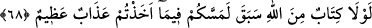

devam ettirilmektedir. Yani, siz esirlerden fidye alarak dünyanın çerçöpünün peşinde
koşuyorsunuz.
Dünya malına “araz” denilmesi, fazla kalıcı olmadığındandır. Dünyevî menfaatlerin
ve bunlarla alakalı her şeyin kalıcı ve devamlı olmadığını ifade etmektedir. Bu itibarla
ortaya çıkıp sonra hemen kaybolan bir gölge gibi gelip geçicidir.
Burada hitap Rasûlullah (s.a.v.)’e ve ashâbının ileri gelenlerine değil, dünyalık
peşinde olan kimseleredir. Çünkü Ebû Bekir (r.a.)’ın kasdı, dinin yüceltilmesi ve
esirlerin müslüman olmaları ümidi idi.
Âyette yine müşrik esirlerden fidye almanın ne Nebî (a.s.)’ın ne de diğer
peygamberlerin âdeti olmadığına işaret vardır. Çünkü fidye almak dünyaya rağbet
sayılır. Nebî (a.s.)’ın mizâcı ise buna uygun değildi. Nitekim O: “Benim dünya ile ne
alakam olabilir?”[69] buyurmuştur.
Bu dünya cîfedir, murdar ve değersiz
Böyle bir murdar için nasıl haris olabilirim
Allah Teâlâ’nın “İş hususunda onlarla istişare et.” (Âl-i İmran, 3/159) emrine
imtisalen Allah Rasûlü onlarla istişare ettikten sonra bazıları, dünya malına rağbet
göstermişti.
“Allah ise” sizin için “ahireti istiyor.” dünya ve içindekilerle ölçülemeyecek
miktarda ahiret sevabına erişmenizi istiyor.
Şeyhülislâm Sa‘dî Çelebî der ki: Doğrusunu Allah bilir, herhalde bu ifadeden
maksad, “Allah (sizin için) ahirete razı olur.” demektir. Rıza kelimesi yerine iradenin
kullanılması ise iki kelime birbirine benzediği içindir. Böyle olunca Allah Teâlâ’nın
muradı vukua gelmemiş diye bir itiraz ileri sürülemez. Yine âyet, ehl-i sünnetin “murâd-
ı ilahi mutlaka vukua gelir.” görüşüne ters olmamış olur.
“Allah daima üstün,” dostlarını düşmanlarına karşı galip getiren Azîz, “hüküm ve
hikmet sahibidir.” ne zaman ne yapılacağını en güzel şekilde bilen Hakîm’dir. Bunun
içindir ki güç-kuvvet müşriklerde olduğu zaman onların kılıçtan geçirilmesini emretmiş
ve fidye almayı yasaklamıştır. Durum değişip Müslümanlar üstün hâle gelince: “Ondan
sonra artık ya lütfen bırakır veya karşılığında fidye alırsınız” (Muhammed, 47/4)
buyurarak bu iki hususta onları muhayyer bırakmıştır.
Bazı âlimler, bu âyetin peygamberlerin müctehid olduklarına delalet ettiğini
söylemiştir. Çünkü âyetteki kınama, vahiy neticesi ortaya çıkan bir hâdiseden ve doğru
alınmış bir hükümden dolayı değil, olması mümkün bir hatadan dolayıdır. Şu kadar var
ki peygamberler ictihadlarındaki hata üzere bırakılmayıp uyarılarak hataları düzeltilir.